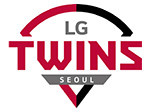

1988년과 89년, 2년 연속으로 7개 팀 중에 ‘6위’라는 최악의 성적을 받아든 MBC는 결국 구단 매각을 결정한다. 1989년 12월 12일, MBC 노사합의를 통해 구단 매각이 공식 발표됐고 1990년 1월 18일 럭키금성 그룹이 130억 원에 MBC 청룡을 인수했다. 럭키금성은 1982년 프로 원년에도 프로야구에 참여할 기회가 있었지만, 연고지 문제와 그룹 내부 결정이 늦어지며 참여가 무산됐던 바 있다. 당시 그룹 임직원을 대상으로 공모를 거친 끝에 나온 새로운 구단 명은 ‘LG 트윈스’. 그룹명인 ‘럭키금성’의 머리글자를 따서 LG로 이름을 정하고, “쌍둥이 어린이 로봇이 타격자세를 취하는 모습”을 묘사한 마스코트를 만들었다. “다른 구단이 동물을 채택한 것과 달리 인간을 존중하는 그룹정신을 표현”하려고 했다는 게 당시 구단의 발표 내용이다.
